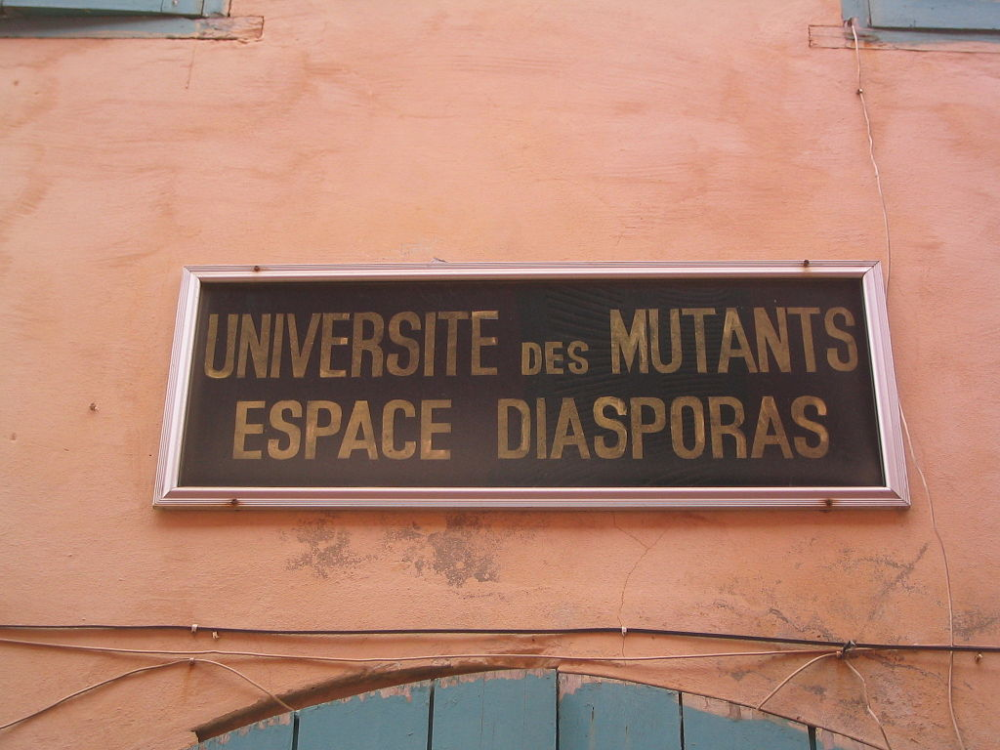

Située au large de Dakar, dans l’océan Atlantique, l’île de Gorée est une étape incontournable lors d’un voyage au Sénégal. L'île de Gorée, ou simplement Gorée, est à la fois une île de l'océan Atlantique nord située dans la baie de Dakar et l'une des 19 communes d'arrondissement de la capitale du Sénégal. C'est un lieu symbole de la mémoire de la traite négrière en Afrique, reconnu officiellement par l’Organisation des Nations unies (ONU) en 1978 : Gorée, « île-mémoire » de cette tragédie, fut ainsi l’un des tout premiers lieux à être portés sur la liste du patrimoine mondial gérée par l'Organisation des Nations unies pour l'éducation, la science et la culture (UNESCO).
la Maison des Esclaves constitue le passage obligé de quiconque se rend à Gorée pour la première fois. Le rôle réel de la célèbre maison rose – et plus généralement de l'île – dans la traite négrière est dénoncé depuis plusieurs années comme relevant du « mythe »6. En effet, selon les estimations, seuls 500 000 esclaves (sur environ 12 000 000) seraient partis du Sénégal tout au long de la période esclavagiste. Les principaux ports négriers se situaient plus au sud et notamment dans le golfe du Bénin (cf. Côte des Esclaves), au Congo et en Angola.
monument commémorant la libération de l'esclavage
L'Université des Mutants est un centre international de rencontres et de conférences fondé en 1979 à l'initiative du Président Léopold Sédar Senghor et de l'écrivain et philosophe français Roger Garaudy. Le bâtiment de l'Université est devenu, depuis le 3 juin 20149, le siège social de la Fondation Mondiale pour le Mémorial et la Sauvegarde de Gorée.
Comme dans la presqu'île du Cap-Vert, les premiers habitants étaient des Lébous. Comme à Saint-Louis, les Européens, principalement français, se sont installés en nombre sur l'ile et se sont métissés avec la population locale créant ainsi la classe des signares. La plus grande partie de la population est musulmane, mais les catholiques sont également présents.
| Non Resident en Afrique | Resident en Afrique | Nationaux | Goreen | |
|---|---|---|---|---|
| Enfants | 2700 | 1700 | 500 | 50 |
| Adultes | 5200 | 2700 | 1500 | 100 |